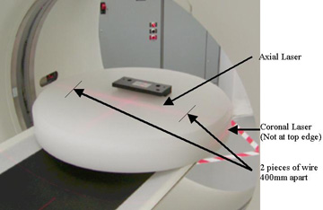
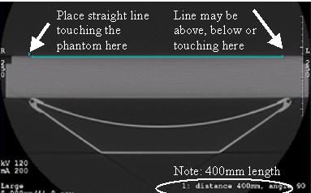
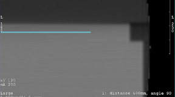
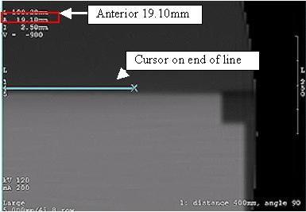
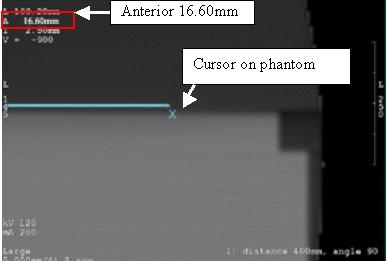

Operating Documentation
Direction 5193575-800, Rev# 5
LightSpeed 7.X Service Information - Adv
Operating Documentation |
| Required Persons | Preliminary Reqs | Procedure | Finalization |
|---|---|---|---|
| 1 | Timing Not Applicable | 15 minutes | See referenced procedure timing. |
One of the new CTQ’s for the oncology customer is the importance of more accurate patient and image registration than is currently typical of general purpose CT systems. For radiation treatment (RT) planning purposes, it is desired to scan the patient on the CT scanner in the same position that will be used for radiation treatment. The gantry lasers are used to locate the patient in all 3 dimensions and thus the accuracy of the coronal and sagittal laser lights is just as important as the accuracy of the axial laser light. This procedure will characterize any necessary offset (used by firmware) to the gantry home flag to make sure the gantry positions the coronal lasers and the reconstructed images in a horizontal location to within tolerances required by oncology sites. This procedure must be run prior to adjusting the sagittal and coronal alignment lasers to make sure the gantry is positioning the lasers in the correct location. This procedure will adjust the gantry and laser light location together. A 400 mm line is used to determine the angular offset such that the vertical offset can be measured at a fixed distance to allow proper calculation of the rotational offset needed. This procedure can be run either with just the phantom or adding thin wire or location BB's (as used for radiation therapy planning) taped on top of the phantom for easier location of the measurements.
| Last revised on: | February 26, 2008 |
| Item | Qty | Effectivity | Part# | Manufacturer | |
|---|---|---|---|---|---|
| 48 cm Poly Phantom | 1 | - | - | - | |
| Bubble Level | 1 | - | - | - | |
| 22 gauge wire (found in installation support kit) | 2 pieces, 3 inch (8 cm) long | - | - | - | |
| Condition | Reference | Eff |
|---|---|---|
Table must be level per system installation instructions. | - | - |
Place the 48 cm poly phantom flat on the table top without any pads at the gantry end. This may be on the oncology flat table top or on the cradle. See Illustration 1 for example. To aid in accurate placement of the measurement lines in subsequent images pieces of thin wire or radiation planning BBs can be taped on top of the phantom on the axial laser at a distance of 400 mm (15 3/4 inches) apart. This will help define the points to measure to rather than the just the ghosted edge of the phantom.
Illustration 1: Phantom position and alignment

Adjust the table height to vertically center the phantom (coronal laser through the middle of the phantom). This is important for a later measure along the top surface of the phantom such that the vertical distance that will be measured does not transition from Anterior to Posterior.
Verify the phantom is level side to side (along the axial laser) using a bubble level. If the phantom is not level check the following:
Check the cradle and table to make sure they were installed level. If not adjust prior to characterization. (Refer to the Installation Manual for current specifications regarding table leveling)
If the table is level, check the phantom and adjust for level along the axial laser using cloth or any material available to shim the phantom.
Landmark the axial laser in the center of the poly phantom. The metal mounting bracket should not be in the FOV.
Run a scan using the Service Generic Scan protocol (protocol 42.1).
On the Image Works desktop, in the Browser, select and display the 2nd of the 4 images to display in the Viewer. In the Viewer tool bar, on the left side, select Format and choose the Single box format for the largest view. See Illustration 2 for example image.
Illustration 2: Phantom image

| NOTE: | If you used the wire or similar small item you will see two distinct locations shown on the phantom surface. Use these to locate the line and measurements in the next steps. |
Adjust the Window to approximately 300 and set the Level to approximately -200. We are looking for a well defined top edge of the phantom for a reference point.
Draw a line and place it on the phantom using the following steps:
In the Viewer left side tool bar, select the distance measurement tool (Measure button – line option) and draw a horizontal line that is horizontally flat and exactly 400 mm long. Make sure the line is completely flat.
Position this line centered on the phantom top surface such that the left side is just touching the top surface of the phantom or the wire used as the locator for this location.
Zoom the image to 2x and use the right mouse to shift the image side to side to make sure the line is flat and to accurately see the line starting point as defined in Illustration 3. Shift the line if necessary while zoomed to have the starting point on the top surface of the phantom keeping it centered left to right in the image.
The line may end up above, below or right on the right edge of the phantom depending on the amount of error that may exist. The example in Illustration 3 shows a gantry that does not need any adjustment.
Illustration 3: Example 400 mm line

Zoom the image to 4 times. Use the right mouse button to drag the phantom to the left to see the right side (phantom left annotation side). See Illustration 4 below.
Illustration 4: Phantom zoomed and shifted

The figures below show examples of the line ending up above and below the phantom. The other end of the line was the end manually placed touching the top edge of the phantom. These examples indicate a condition that requires a measurement and subsequent offset correction to be applied to the gantry to straighten the image.
Illustration 5: Example of line above

Illustration 6: Example of line below

In the Viewer left side tool bar, select the Measure button, “X” (cursor) tool from the viewer. To move the "X", you can click-n-drag it using any corner of the "X" - you do not need to click the center. Place the cursor first on the end of the line segment as shown in Illustration 7 below. Note the Anterior displayed location of the cursor as location A.
Illustration 7: Cursor location on line

Move the cursor to the top edge of the phantom or wire locator for this location directly below the end of the line segment as shown in Illustration 8 below. Note the Anterior displayed location as location B.
Illustration 8: Cursor location on phantom

Subtract location A from B to get the physical distance from the line to the edge of the phantom as xx.xx millimeters. This represents the rotational offset that needs to be applied to the gantry home location in firmware. A positive value rotates the gantry in the clockwise direction.
From Illustration 7 and Illustration 8 above: 16.60 - 19.10 = -2.50mm offset
If the offset value is less than 0.50 mm there is no characterization needed. Go directly to the Finalization section. Otherwise continue with the next step.
Start the Gantry Rotational Characterization tool from the Common Service Desktop under the Calibration tab. You will see window open with the following menu:
Gantry Rotation Characterization Menu: 1 Instructions 2 Enter Gantry Rotation Distance 3 Reset Gantry Rotation Compensation to Zero 4 Exit Characterization Tool Enter Selection:
Select option 2 to enter the offset found as xx.xx millimeters. Make sure you enter the value as a signed number. The signed value tells the firmware what relative offset to apply to the gantry home location. From the example above this would be “-2.50”.
If the end of the line was above the phantom top edge the number will be negative. (rotate gantry counterclockwise for offset)
If the line was below the phantom top edge the number will be positive. (rotate gantry clockwise for offset)
Enter the value and hit the Enter key to return to the main menu.
Run the scan again to make sure the phantom now appears as level in the image display as seen in Illustration 3 and Illustration 4.
If the offset as measured in steps 10-12 is less than 0.50 mm (absolute value), go to the finalization section.
If the offset as measured in steps 10-12 is 0.50 mm or more:
If this is the first time through this procedure then repeat this procedure starting at step 5.
If you have done this procedure twice already go to the troubleshooting section below.
You are in this section if the procedure has not worked as expected or has given you an invalid entry.
Table 1: Troubleshooting
| Issue | Resolution/Comments |
| Gantry Rotation Characterization tool tells me “Value entered is invalid” | Check the value you are typing in to make sure it is a number and does not include any characters such as “mm”. Only the signed number entry is allowed. |
| Gantry Rotation Characterization tool tells me “Entered value plus current offset is outside the acceptable range for total gantry offset correction.” | This means that the current offset correction in firmware plus the number you just entered is outside the allowable limits for the offset correction. This range is +/- 35 mm total offset which corresponds to +/- 5 degrees gantry rotation offset. Measure the distance again, typical values will be less than 20 mm. Check to make sure the table is properly leveled. |
| The image tilt seems to be changing in the opposite direction I expect. | Entered offset is either missing the negative “-“ value indication or you are not subtracting the location of the line from the location of the top edge of the phantom. |
Perform alignment light adjustments to make sure the gantry alignment lights are properly aligned after gantry rotational characterization. The coronal and sagittal lights may need to be shifted due to the offset applied to the gantry home position.